Research · 2025 – 2026 · Independent research
Debris removal by nodal precession
Multi-target active debris removal that lets orbital physics do the plane changes.

- 29objects in one saved 7-year tour, 28 legs
- 1,446 m/stotal delta-V for that tour, about 52 m/s a leg
- 527 daysfor a 40° plane gap to close by drift alone in the worked example
- 3×objects per mission against impulsive plane changes: a median 29 against 9 at 2 km/s and 7 years
A study of removing several pieces of orbital debris per mission by exploiting the natural drift of orbit planes caused by Earth's oblateness, replacing costly plane-change burns with patient waiting at a chosen altitude.
01The idea
Earth is not a perfect sphere, and its equatorial bulge makes the plane of an orbit rotate slowly, at a rate that depends on altitude and inclination. Two pieces of debris in different planes drift into line with each other if the spacecraft waits at the right altitude. That is a plane change paid for in time instead of fuel, and plane changes are normally the most expensive manoeuvres in a debris-removal mission.
In the worked example, a chaser at 775 km and a target at 975 km, both at 82.9°, start with their planes 40° apart. The lower plane turns at -0.824° a day against -0.749° for the higher one, so the gap closes at 0.076° a day and the planes coincide after about 527 days, with no burn.

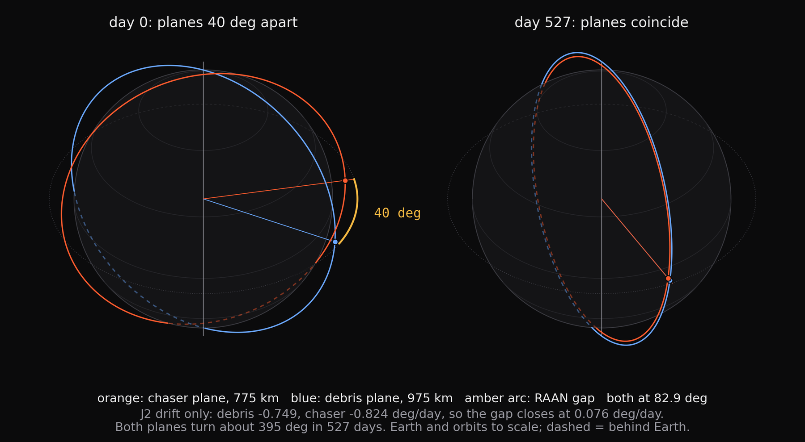

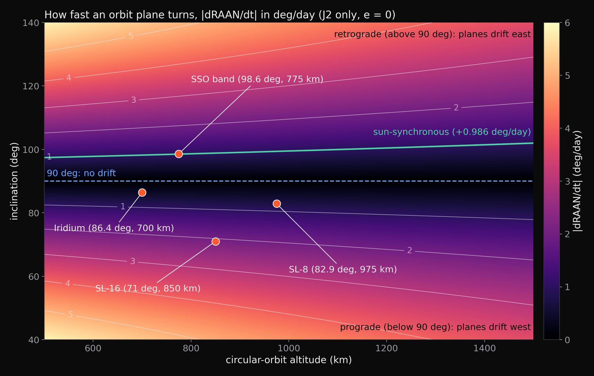
02What waiting saves
A single plane-change burn costs several km/s, more than a whole 2 km/s mission budget once the angle passes a few degrees. Dropping 100 to 400 km, waiting and climbing back costs about 100 to 420 m/s, and the price is time. How deep to drop sets how long the wait is, and the time-to-align curves show the trade directly. The 1° alignment window used in the figure is an assumed tolerance, not a measured one, and the calculation is impulsive, circular and J2-only, with no drag.

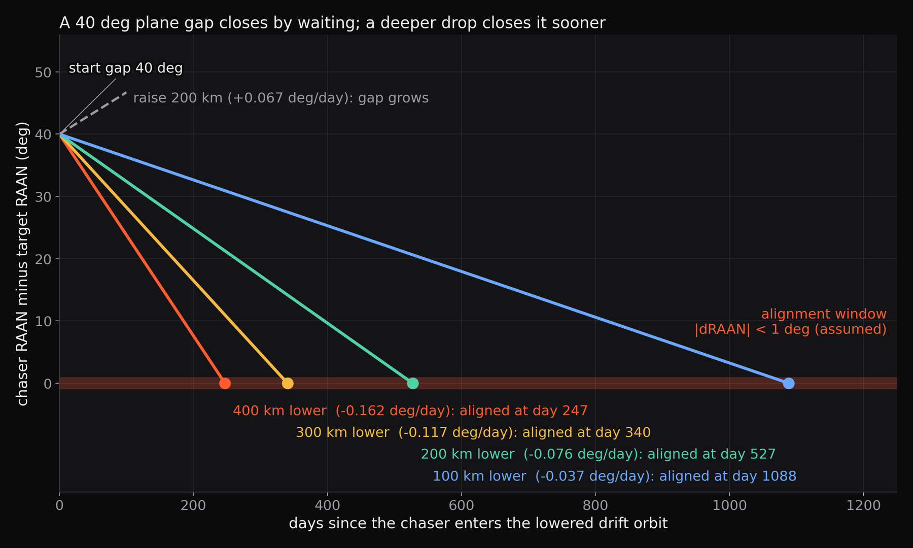

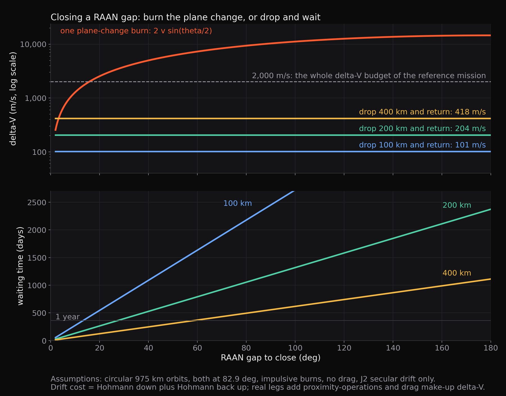
03A closed-form result
Lowering a spacecraft by some amount changes the nodal rate by more than raising it by the same amount, with a rate ratio of about 1 + (9/2)(Δa / a), which is 1.063 at 100 km, 1.130 at 200 km and 1.278 at 400 km. Lowering also costs somewhat more fuel than raising, by a Hohmann cost ratio of about 1 + 1.5 Δa / a, so the net gain per unit of fuel is real but modest. It still gives a rule for choosing where to wait.

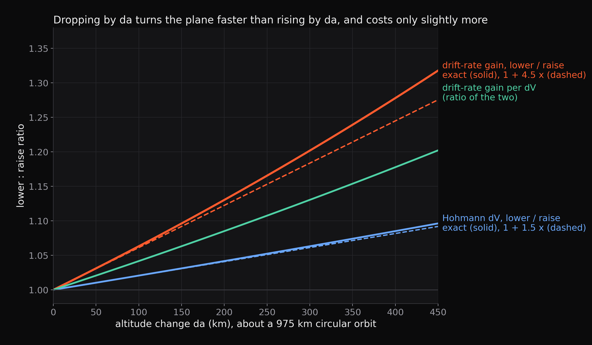
04From a catalogue to a mission
The pipeline starts from the public satellite catalogue, frozen and hash-pinned on 18 August 2026: 70,292 rows, of which 1,151 are reachable non-operational payloads and rocket bodies at 600 to 1,500 km. Clustering gives 913 objects in 51 sub-clusters, a candidate pool. The tours themselves use per-band pools with real orbit planes: 159 SL-8 rocket bodies, 135 sun-synchronous objects, 28 Iridium-class and 20 SL-16. A 2025 run reported 63,553 rows, 1,288 objects and 593 in 40 sub-clusters; those counts could not be reproduced and are superseded. The plane-spread panel below uses real two-line element sets.

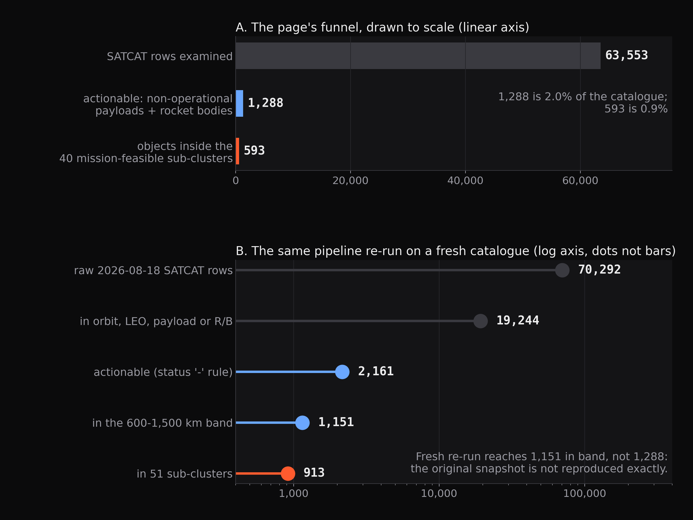

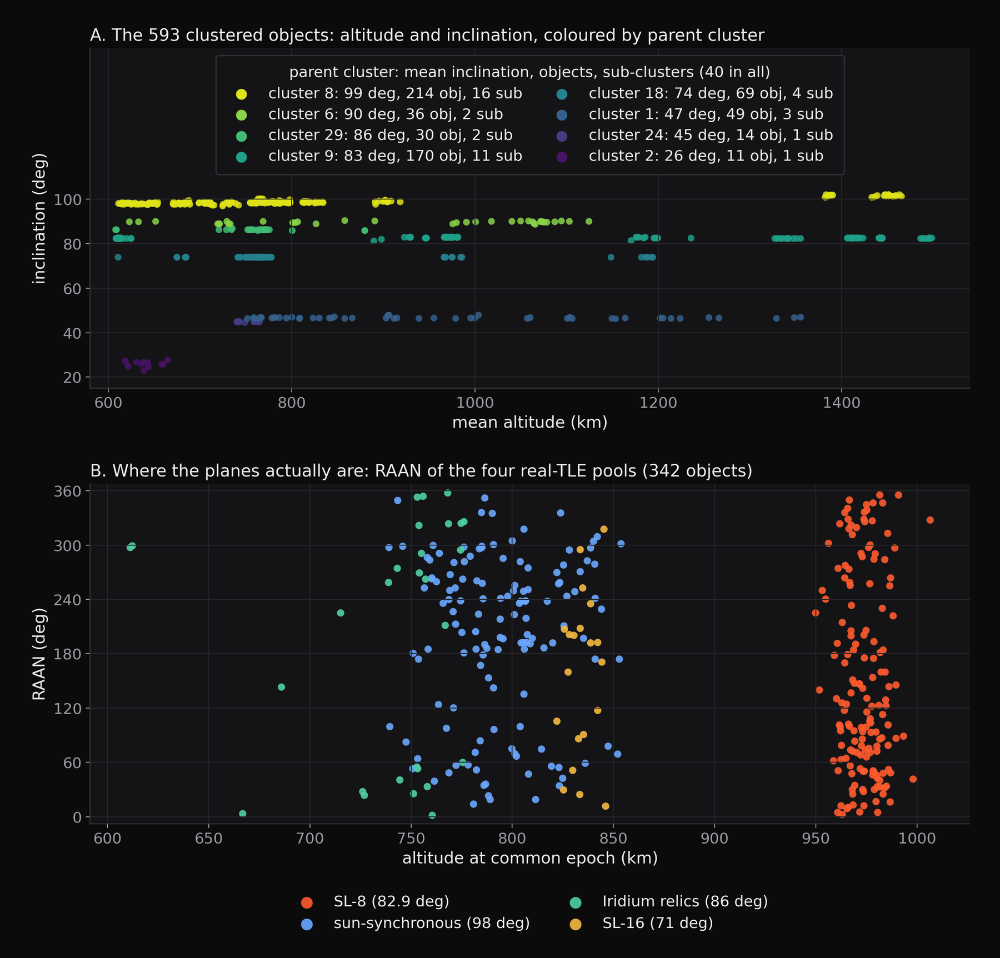
05One mission, end to end
A tour optimiser picks the first target, the order of visits and the lowered altitude for each leg. The saved tour on the real SL-8 rocket-body pool visits 29 objects in 28 legs over 7.00 years for 1,445.5 m/s, a mean of 52 m/s a leg and 121 at most, including an assumed 15 m/s of proximity operations per leg. Replaying it against the repo's leg costs reproduces the total exactly, and every arrival lands on its target plane. Counts are best-of-top-60-starts and assume the chaser is inserted at the first object for free.

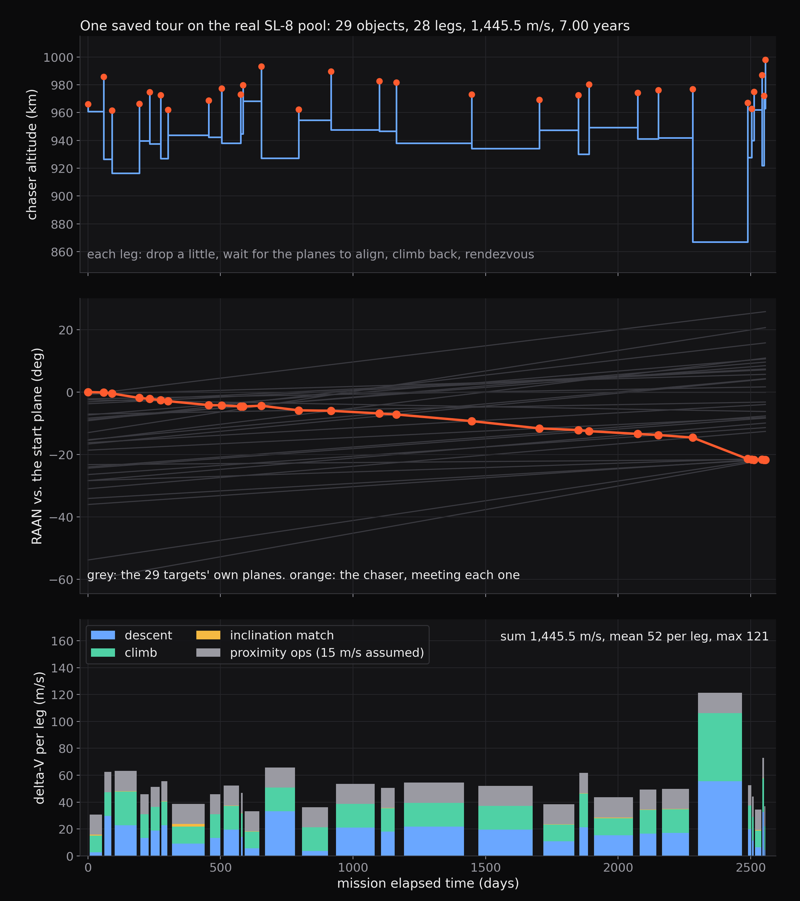
06Solvers and fleet reach
Starting from every one of the 159 SL-8 objects, the median tour reaches 29 objects at 2 km/s and 7 years and 67 at 5 km/s and 15 years. Against an exact dynamic-programming optimum on 32 small instances, a tuned beam search is 1.9% from optimal (95% interval 0.6 to 3.4%), the draft's configuration 10.3%, greedy 18.7% and NSGA-II 9.7%. The weight that trades objects against fuel mattered more than the beam width. The benchmark and fleet panels below still show best-of-60-start counts from the earlier configuration and are kept for the band comparison only. An earlier single-mission estimate of 38 objects did not survive; the history panel mixes unlike methods and says so.

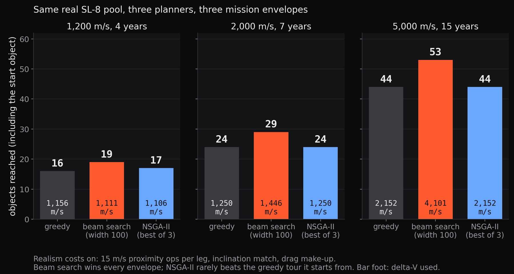

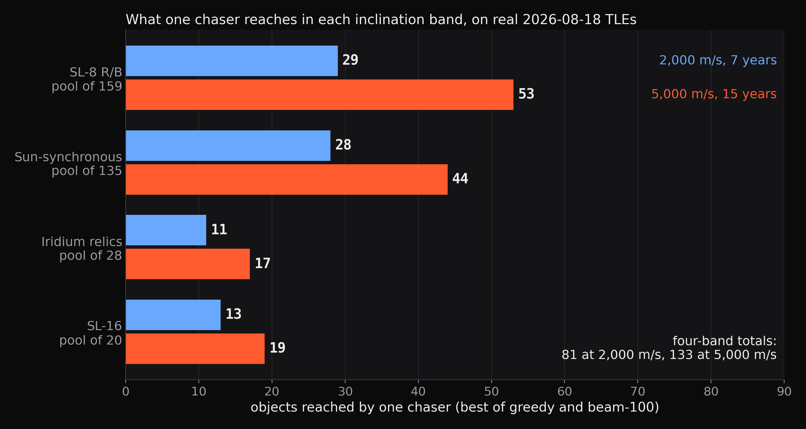

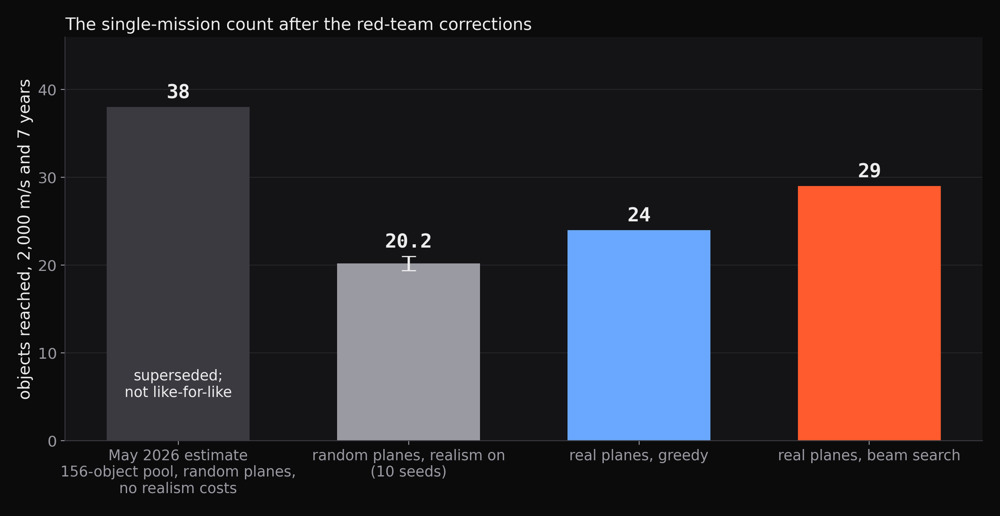
07The surrounding study
The project also compares deployment concepts for the removal itself (nanotugs, electrodynamic tethers, drag sails, ion-beam shepherds, laser ablation, solid-rocket packages and hybrids), choosing the right one per altitude band, and couples the optimiser to a debris-growth projection to rank campaigns by collision risk avoided. The estimate is ranking-level only: a median SL-8 tour avoids about 0.04 collisions over 25 years (5 to 95%: 0.025 to 0.055).
08Version 3: audit and paper
The study has been re-audited and rewritten as an 18-page paper with every number regenerated from one script on a frozen, hash-pinned catalogue snapshot (2026-08-18). That snapshot gives 1,151 actionable objects in the working band and 913 objects in 51 sub-clusters; the earlier 63,553, 1,288 and 593 could not be reproduced and are superseded.
The lowering result is now proved, not just observed. The drift-rate ratio exceeds 1 by convexity, with the series 1 + (9/2)x + (81/8)x² and a remainder bound, where x is the altitude change over the orbit radius. Lowering costs more fuel by a Hohmann ratio of 1 + 1.5x, so the net gain per unit delta-V is about 1 + 3x. The draft's best depth of 150 to 300 km below the targets does not exist: the gain per unit delta-V rises steadily with depth. For eccentric objects (e above about 0.03) raising beats lowering. The old 59.8% saving has no time-free meaning: for a 1° plane gap it is 80% if 279 days are allowed and 13% if 30 days.
On the SL-8 rocket-body pool, starting from every one of 159 objects, the median tour reaches 29 objects at 2 km/s and 7 years and 67 at 5 km/s and 15 years. Impulsive plane changes reach 9 and 19, and waiting without changing altitude reaches 6 and 12. The earlier 29 to 53 figures were best-of-60-starts counts. A tuned beam search is 1.9% from the exact optimum on 32 small instances (95% interval 0.6 to 3.4%), against 10.3% for the draft's configuration. Numerical propagation of sampled legs closes the node to 0.05° or better. The result is most sensitive to the proximity-operations allowance: 50 m/s costs about 8 objects. The collision-risk benefit is about 0.04 collisions avoided over 25 years (5 to 95%: 0.025 to 0.055), a ranking-level estimate only.
Of ten new methods screened with confidence intervals, two are supported: a parked carrier that places expendable kits, which places kits 4.5 to 6 times faster and cuts launch mass 5 to 50% as an upper bound that ignores kit avionics, and choosing the object pool by how concentrated its orbit planes are (21 objects against 16 and 14). Low-thrust profiles, eccentric orbits, bielliptic and Oberth plane changes for small angles, Moon-and-Sun alignment, drag sails at 975 km, towing and cluster splitting did not hold up. Honest novelty: no new astrodynamics. Lowering and J2 phasing are prior art, and the closed-form ratio and the eccentric reversal are elementary and apparently unpublished. The contribution is the evidence: the audit, the frozen snapshot, the exact-optimum check and the fair baselines.
09Where it stands
Honest status: the first version measured its savings against a naive baseline, and its largest claims (a 38-object tour, a 95.4% cut in future collisions, a 59.8% saving) did not survive review. The paper replaces them with fair baselines on one frozen catalogue snapshot. A tour that waits at a lowered altitude reaches a median 29 objects at 2 km/s and 7 years, against 9 with impulsive plane changes and 6 by waiting at the same altitude. The price is time: such a tour takes 2,500 to 5,300 days, where impulsive tours take weeks. What is new is the evidence (the audit, the frozen snapshot, the exact-optimum check and the fair baselines), not the astrodynamics.